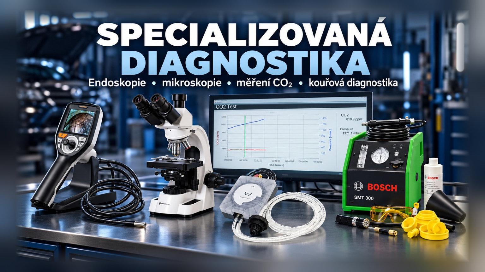
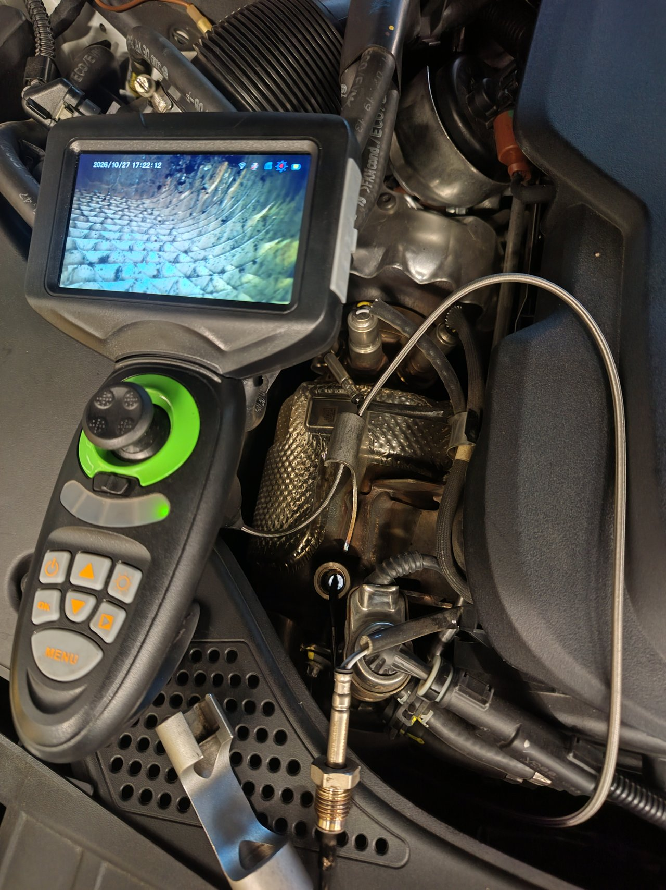
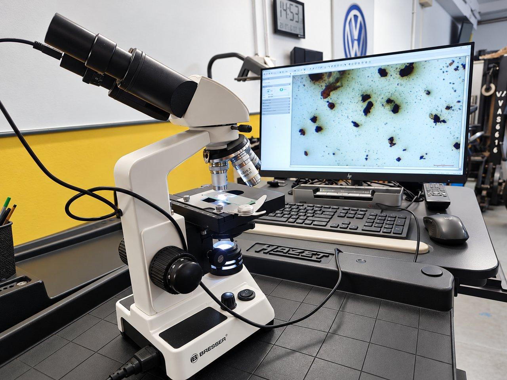
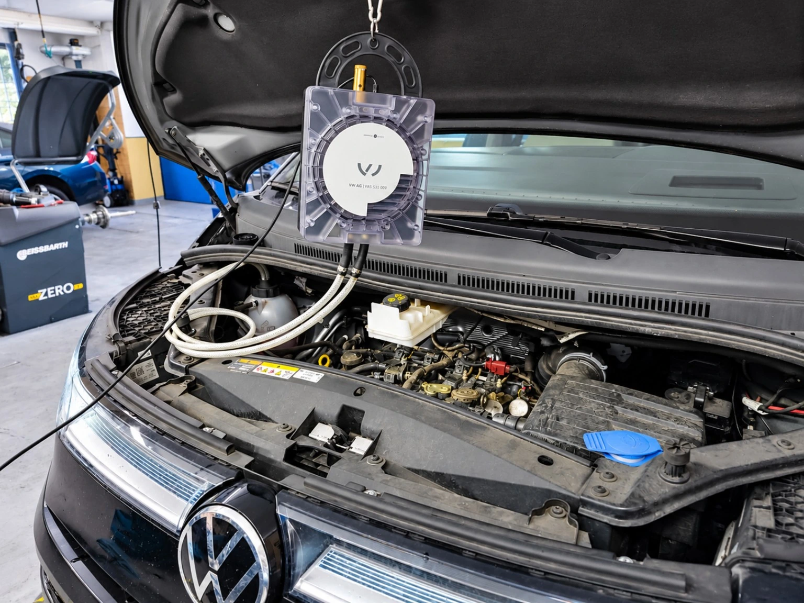
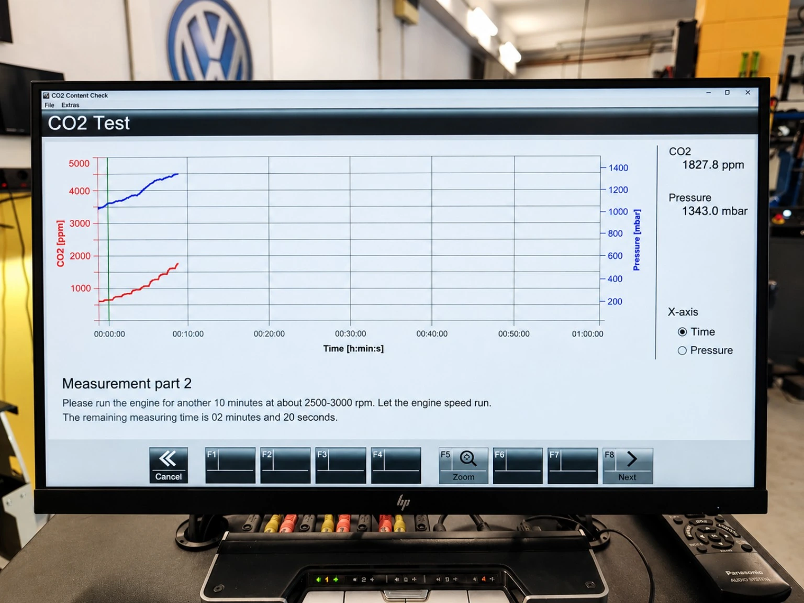
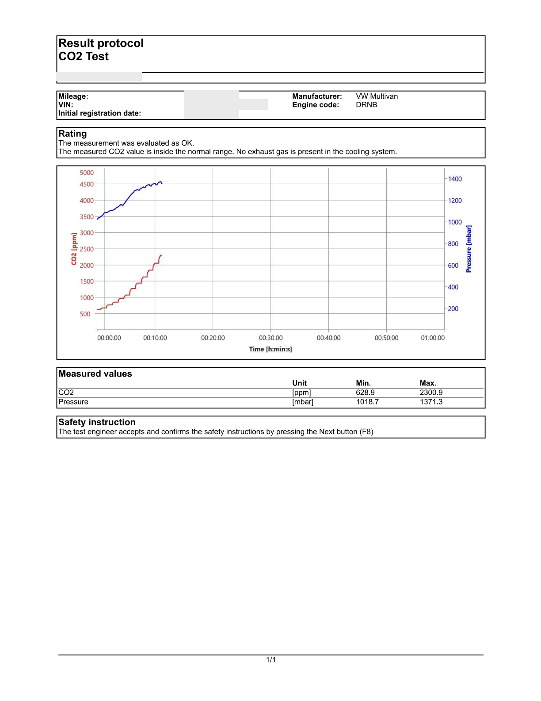
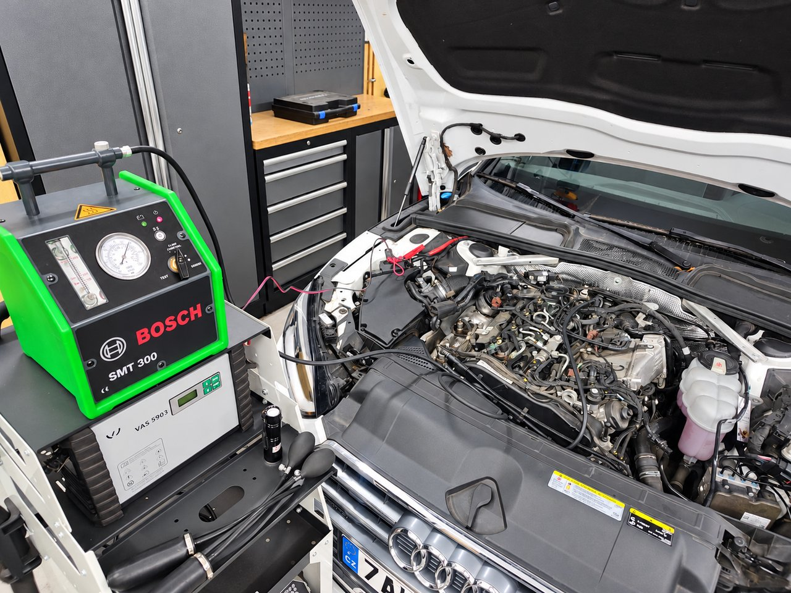
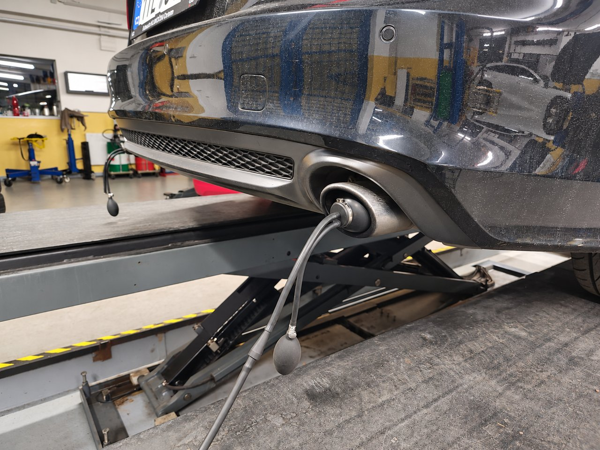
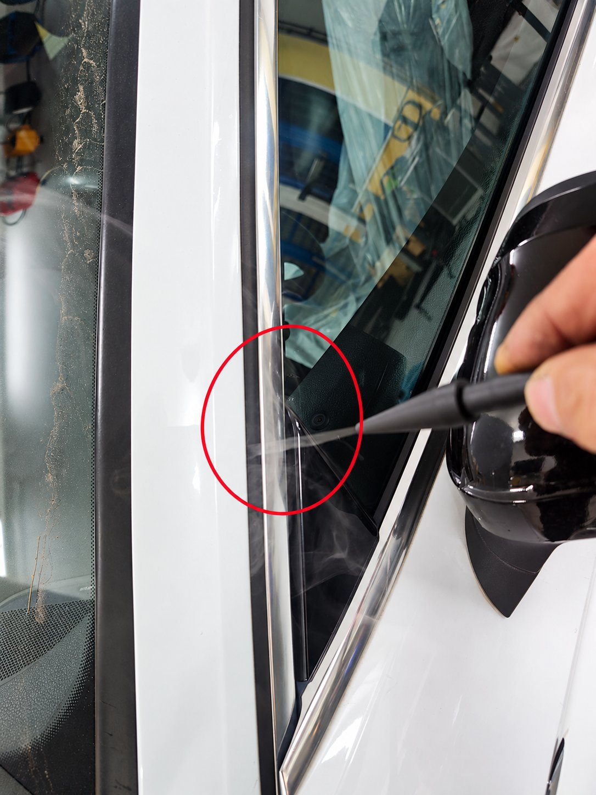
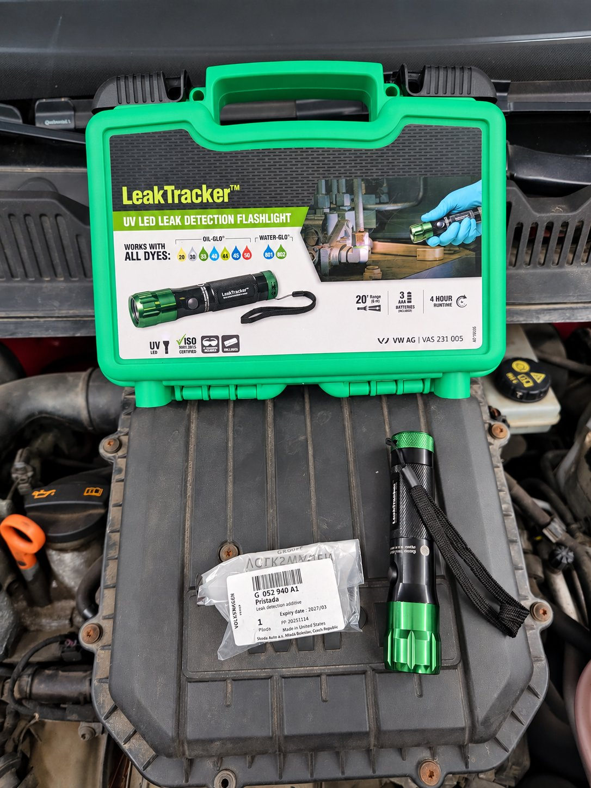

Chẩn đoán chuyên sâu
Khi tìm kiếm nguyên nhân của lỗi, điều quan trọng là kết nối các triệu chứng của phương tiện với kết quả của các phép đo cụ thể. Trong chẩn đoán chuyên môn, chúng tôi sử dụng các xét nghiệm nhắm mục tiêu giúp quyết định thủ tục sửa chữa tiếp theo. Chúng tôi chọn phạm vi kiểm tra theo cấu trúc xe và các vấn đề được mô tả.


Phương pháp theo nhu cầu kiểm tra
Đồ họa và văn bản giới thiệu trong các bức ảnh gốc được giữ lại bằng ngôn ngữ gốc của chúng. Báo cáo đo lường PDF bằng tiếng Anh.
Nội soi kỹ thuật
Kiểm tra nội soi động cơ và các bộ phận khó tiếp cận
Nội soi kỹ thuật cho phép quan sát các khoang bên trong và những bộ phận không thể tiếp cận khi kiểm tra trực quan thông thường. Chúng tôi sử dụng hệ thống camera có đầu dò điều khiển hướng quan sát trong phạm vi 360°. Tùy theo kết cấu xe, phương pháp này có thể giảm mức độ tháo rời cần thiết để đánh giá ban đầu hư hỏng.



Nội soi có thể kiểm tra được những gì?
- Các phần có thể tiếp cận của buồng đốt, đỉnh pít-tông và thành xi-lanh.
- Cặn bám nhìn thấy được và dấu vết hư hỏng cơ học.
- Các phần có thể tiếp cận của hệ thống nạp và hệ thống xả.
- Cấu trúc bên trong của bộ xúc tác hoặc bộ lọc hạt, nếu kết cấu của xe cho phép đưa đầu dò vào và có được góc quan sát cần thiết.
- Các vị trí khó tiếp cận khác tùy theo đặc điểm của hư hỏng.
Phạm vi kiểm tra luôn phụ thuộc vào kết cấu của động cơ hoặc bộ phận cụ thể, các lỗ tiếp cận sẵn có và khả năng đưa đầu dò vào một cách an toàn.
Chúng tôi đánh giá kết quả này như thế nào?
Chúng tôi đánh giá hình ảnh nội soi cùng với biểu hiện hư hỏng và kết quả của các phép thử chẩn đoán khác. Hình ảnh giúp xác định bước tiếp theo và quyết định có cần kiểm tra chi tiết hơn hoặc tháo rời hay không.
Nội soi chỉ cho thấy tình trạng của các bề mặt quan sát được. Chỉ riêng hình ảnh không xác nhận độ kín của buồng đốt hoặc hiệu quả hoạt động của bộ xúc tác hay bộ lọc hạt. Vì vậy, tùy theo phát hiện, chúng tôi bổ sung các phép đo khác.
Lợi ích cho khách hàng
Kiểm tra trực quan có mục tiêu cung cấp cơ sở cụ thể để giải thích phát hiện và đề xuất sửa chữa. Khi đầu dò tiếp cận được vị trí cần kiểm tra, phương pháp này có thể giúp hạn chế việc tháo rời không cần thiết.
Kiểm tra bằng kính hiển vi chất lỏng của xe
Kiểm tra bằng kính hiển vi chất lỏng của xe
Chúng tôi đánh giá sự hiện diện và sự xuất hiện của các hạt rắn và tạp chất bằng cách kiểm tra theo kính hiển vi các mẫu chất lỏng hoạt động. Chúng tôi đánh giá kết quả liên quan đến loại chất lỏng, nơi lấy mẫu và các triệu chứng của khuyết tật. Việc kiểm tra là một cơ sở bổ sung cho các thủ tục chẩn đoán tiếp theo.
Ví dụ từ thực tế: kiểm tra dầu động cơ đã qua sử dụng từ động cơ 1.4 TSI


Bức ảnh thể hiện việc kiểm tra một mẫu dầu động cơ đã qua sử dụng bằng kính hiển vi hình ảnh kỹ thuật số. Chúng tôi theo dõi sự xuất hiện và biểu hiện của các hạt rắn và tạp chất quan sát được.
Chúng tôi đánh giá kết quả cùng với những khó khăn vận hành của xe và kết quả của các kiểm tra khác. Sự hiện diện của các hạt không đủ để xác định rõ nguyên nhân của lỗi.
Chỉ riêng hình ảnh hiển vi không thể xác định được thành phần hóa học hoặc nguồn gốc chính xác của các hạt một cách đáng tin cậy. Kiểm tra bằng kính hiển vi không thay thế việc phân tích chất lỏng trong phòng thí nghiệm.
Đo CO₂
Chẩn đoán khí cháy lọt vào hệ thống làm mát
Chúng tôi sử dụng thiết bị AVL DiTEST VAS 531 009 để kiểm tra. Nó đo hàm lượng carbon dioxide (CO₂) trong bình giãn nở của hệ thống làm mát và đồng thời ghi lại đường cong áp suất. Hàm lượng CO₂ tăng lên có thể cho thấy sự xâm nhập của khí thải vào mạch làm mát.


Khi nào đo lường là thích hợp?
Khi tìm kiếm nguyên nhân gây ra hiện tượng mất chất làm mát nhiều lần, áp suất bất thường hoặc động cơ quá nóng, phép đo CO₂ có thể là một phần của quy trình chẩn đoán. Tuy nhiên, chỉ riêng những biểu hiện này không khẳng định được sự xâm nhập của khí thải. Chúng tôi đánh giá mức độ phù hợp của bài kiểm tra dựa trên chiếc xe cụ thể và kết quả của lần kiểm tra trước đó.
Cách kiểm tra được thực hiện
Chúng tôi kết nối thiết bị với bình giãn nở thông qua bộ chuyển đổi thích hợp. Trong quá trình thử nghiệm, chúng tôi theo dõi các giá trị của CO₂ và áp suất theo thời gian. Chúng tôi điều chỉnh quy trình và điều kiện đo theo hướng dẫn của nhà sản xuất phương tiện và thiết bị. Đầu ra của chương trình đo là một báo cáo có các giá trị đo được và tiến trình đồ họa.


Cách chúng tôi đánh giá kết quả
Phép đo hỗ trợ chẩn đoán thêm nhưng không tự xác định được thành phần bị lỗi cụ thể. Chỉ số tăng cao không phải là bằng chứng thuyết phục về việc miếng đệm đầu xi lanh bị hỏng nếu không thử nghiệm thêm. Kết quả không có CO₂ tăng cao cũng không xác nhận rằng toàn bộ hệ thống làm mát không có lỗi. Chúng tôi đánh giá các phát hiện cùng với các triệu chứng vận hành và các kiểm tra khác.
Báo cáo đo lường mẫu
Báo cáo đính kèm về bài kiểm tra Multivan Volkswagen được phần mềm đánh giá là OK. Đây là kết quả của một phép đo trong điều kiện của bài kiểm tra đó, không phải là kết quả xác nhận chung rằng xe hoặc toàn bộ hệ thống làm mát không có lỗi.

Kiểm tra rò rỉ khói
Chẩn đoán bằng khói – xác định vị trí rò rỉ có mục tiêu
Các rò rỉ trong các hệ thống xe riêng lẻ có thể gây ra các vấn đề hoạt động, các lỗi động cơ hoặc tiếng xít khó chịu và tiếng ồn khí động học trong khi lái xe. Sử dụng thiết bị kiểm tra rò rỉ bằng khói Bosch SMT 300, chúng tôi tìm kiếm rò rỉ có thể không nhìn thấy trong một kiểm tra thị giác bình thường.




Chúng tôi kiểm tra những gì?
- Hệ thống nạp – rò rỉ trong đường ống, ống mềm, khớp nối và vòng đệm có thể cho phép không khí không được đo lưu lượng đi vào.
- Hệ thống chân không – rò rỉ đường chân không và các bộ phận được kết nối theo thiết kế của xe.
- Hệ thống xả - rò rỉ ở các khớp, vòng đệm và các bộ phận có thể tiếp cận khác của hệ thống xả.
- Hệ thống thu hồi hơi nhiên liệu và thông hơi bình nhiên liệu (EVAP) – rò rỉ tại đường ống, các mối nối và bộ phận của hệ thống.
- Gioăng cửa kính, cửa xe và các lỗ mở khác trên thân xe — những vị trí lọt khí ngoài ý muốn có thể gây tiếng rít, gió lùa hoặc tăng tiếng ồn khí động trong khoang xe.
Việc kiểm tra diễn ra như thế nào?
Để có hệ thống đóng kín phù hợp, chúng tôi đưa khói chẩn đoán vào mạch cần kiểm tra và theo dõi xem nó có thoát ra ngoài nó hay không. Một rò rỉ có thể nhìn thấy giúp xác định vị trí rò rỉ và nhắm mục tiêu sửa chữa tiếp theo đến một vị trí cụ thể.


Khi kiểm tra các gioăng làm kín trên thân xe, chúng tôi quan sát sự thay đổi của dòng khói quanh cửa kính, cửa xe và các khe làm kín. Điều này có thể tiết lộ sự đi qua của không khí, có thể là nguyên nhân gây tiếng ồn khi lái xe.
Chúng tôi chọn phương pháp kết nối và điều kiện thử nghiệm theo phương tiện cụ thể, hệ thống được kiểm tra và hướng dẫn của nhà sản xuất. Đối với hệ thống hơi nhiên liệu, chúng tôi sử dụng môi chất thử và quy trình theo quy định.
Chúng tôi đánh giá kết quả như thế nào?
Chúng tôi đánh giá kết quả cùng với các triệu chứng của khuyết tật và kết quả của các kiểm tra khác. Phép thử khói giúp xác định vị trí rò rỉ; chúng tôi xác minh ảnh hưởng của nó đến chức năng của xe hoặc tiếng ồn trong cabin bằng cách chẩn đoán theo dõi hoặc một chuyến lái thử.
Lợi ích cho khách hàng
Địa điểm chính xác hơn của rò rỉ giúp giảm việc gỡ bỏ và thay thế các thành phần không cần thiết mà không có nguyên nhân được chứng minh. Kết quả cung cấp một cơ sở rõ ràng để giải thích lỗi và đề xuất thủ tục sửa chữa tiếp theo.
Phát hiện rò rỉ tia cực tím
Phát hiện rò rỉ dầu và chất làm mát bằng phương pháp chẩn đoán tia cực tím
Các rò rỉ nhỏ chỉ có thể xuất hiện như sự rò rỉ dần dần. Ngoài ra, chất lỏng rò rỉ có thể lan rộng trên bề mặt các thành phần, vì vậy ô nhiễm có thể nhìn thấy không phù hợp với vị trí thực tế của rò rỉ. Các phương pháp chẩn đoán tia cực tím giúp xác định chính xác hơn nguồn này.


Kiểm tra rò rỉ dầu động cơ
Để tìm vị trí rò rỉ ở động cơ, chúng tôi sử dụng phụ gia huỳnh quang G 052 940 A1 và đèn UV VAS 231 005. Phụ gia hòa trộn với dầu động cơ, cho phép theo dõi vị trí và đường đi của dầu rò rỉ dưới ánh sáng UV.
Rò rỉ lớn hơn có thể quan sát được ngay khi động cơ chạy trong xưởng. Đối với rò rỉ nhỏ, có thể cần phải lái xe trước. Nếu tình trạng kỹ thuật cho phép, khách hàng tiếp tục sử dụng phương tiện sau khi áp dụng chất phụ gia và sau đó quay lại để kiểm tra được thỏa thuận. Sử dụng đèn UV, chúng tôi sau đó kiểm tra các khu vực đáng ngờ và đánh giá các dấu vết kết quả.
Việc sử dụng phụ gia không nhất thiết đòi hỏi phải thay dầu động cơ ngoài định kỳ. Chúng tôi luôn tuân theo hướng dẫn liên quan của nhà sản xuất và căn cứ vào tình trạng kỹ thuật của từng xe.
Kiểm tra rò rỉ chất làm mát
Đèn UV tương tự cũng có thể được sử dụng khi tìm kiếm rò rỉ chất làm mát. Để kiểm tra này, một chất phụ gia quang khác được thiết kế cho các hệ thống làm mát, sự phù hợp của nó phải được xác minh cho chất làm mát và phương tiện cụ thể.
Dưới ánh sáng tia cực tím, bạn có thể tìm kiếm dấu vết rò rỉ, chẳng hạn như xung quanh các kết nối ống, bộ tản nhiệt, máy bơm nước và các bộ phận có thể tiếp cận khác của mạch làm mát. Phụ gia G 052 940 A1 được liệt kê ở trên được thiết kế để kiểm soát rò rỉ dầu động cơ.
Cơ sở khách quan để lập kế hoạch sửa chữa
Chúng tôi đánh giá kết quả liên quan đến các biểu hiện của khuyết tật và kết quả của các kiểm tra tiếp theo. Việc xác định nguồn gốc của rò rỉ thực sự giúp xác định phạm vi sửa chữa và hạn chế việc gỡ bỏ hoặc thay thế các bộ phận không cần thiết mà không có nguyên nhân chứng minh.
Đăng ký kiểm tra
Khi đặt hàng, xin vui lòng mô tả các điều kiện trong đó vấn đề xảy ra và liệu hệ thống làm mát hoặc động cơ đã được bảo trì gần đây hay không. Dựa trên thông tin này, chúng tôi sẽ đề xuất một loạt các phương pháp chẩn đoán phù hợp.